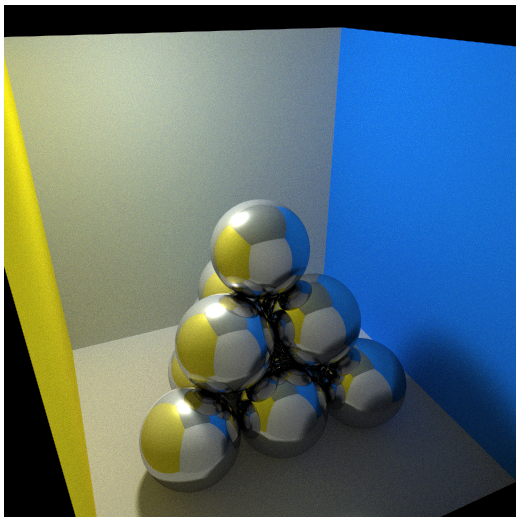
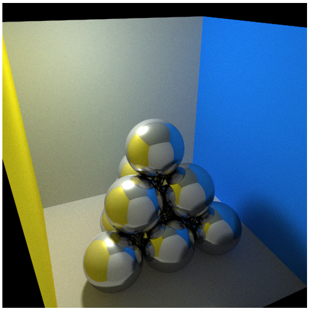

Table of Contents
Graphics
- How to do character inverse kinematics on the cheap. Popular toolkits are Havok Animation, Euphoria engine and HumanIK by AutoDesk.
- YouTube Link! https://www.youtube.com/watch?v=Ae3fgj2x1aI
Autodesk
- 123D is a great set of seemingly free tools for Hobbyists
Blender
- Free is a nice price.
3D Printing
- $10 per cubic inch at CMU (plastic…!) http://artscool.cfa.cmu.edu/~printlab/3d.html
- Also: http://www.cmu.edu/architecture/facilities/dfab-lab/Equipment%20Tab.html email Zach Ali the dfab monitor
WebGL
Way cool WebGL demo…makes me want to take Computer Graphics to build my own ray tracer just for fun  

Signal Processing Images
- Univ. of New Mexico Cool intro page that you saw before. Talks about how different images look in the frequency domain. Talks about filtering them as well and their effects.
- 2D FFT of Goofy :P
{kind=link}
Structure Synth
- Much better than Sketchup for rendering large (>1000) shapes dynamically. For Sketchup, 6-level Sierpinski took 5 minutes, never finished 7-level.
- Looking into how to export it into a good rendering program. Looks like main two are Sunflow and Blender. However, if other programs recognize .OBJ files, they're good to go as well.
- Already installed Sunflow, not sure on Blender.
Tut Examples
Sunflow Usage
- Command Line Usage: (Adjust 4096(MB) to your memory size)
java -server -Xmx4096M -jar sunflow.jar
- Problem is, changing the camera position is a pain. You have to set it up just right in SS and then export. Luckily, SS has a primitive RayTracer built in.
Google Sketchup Notes
Drafting in Sketchup
- Possible source for making a rounded cube here
Rendering
ShaderLight
- Looks really good too! Although limited to 640×480: http://www.artvps.com/
Rendering in Kerkythea
- Good starter blog post is from Alex Shchreyer here
- Currently using 2008 PDF Tutorial
{kind=link}